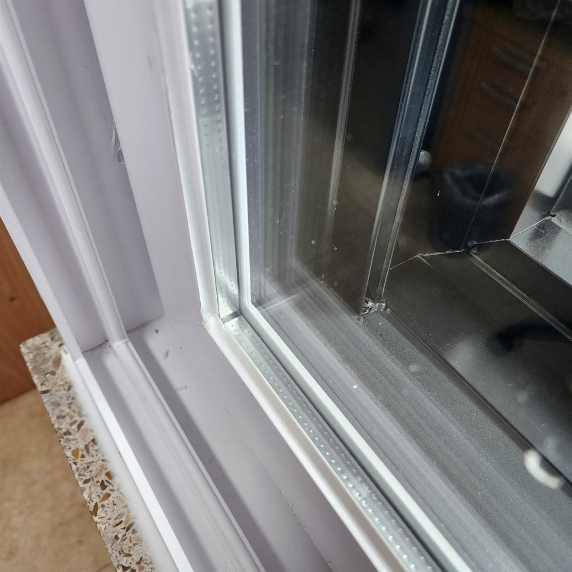
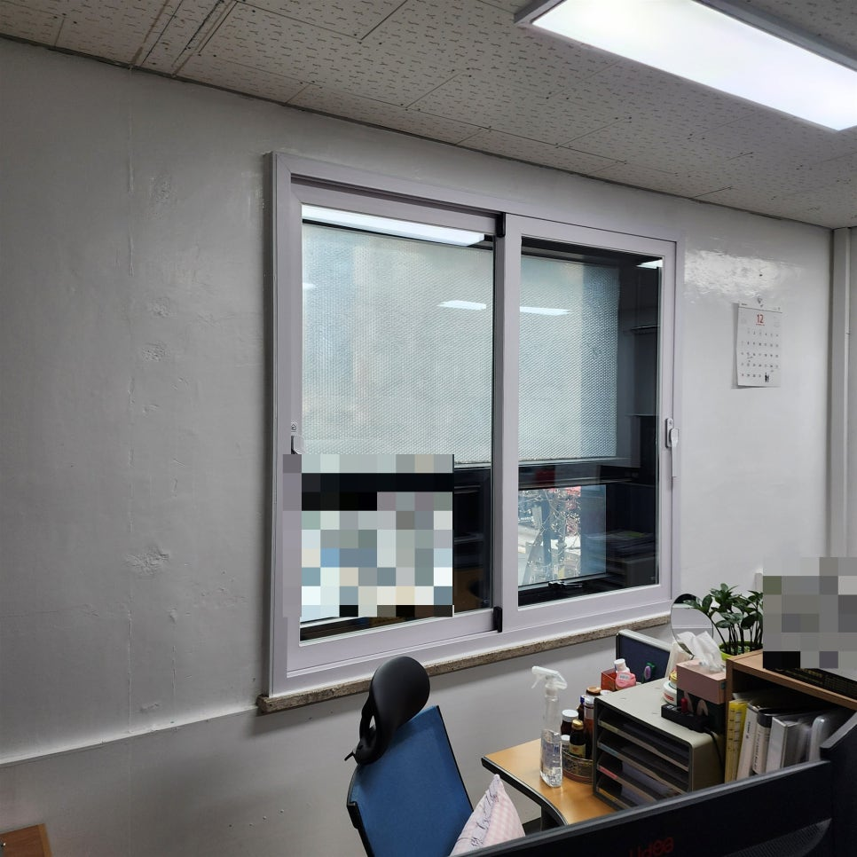

이중샷시는 기존 창을 철거하지 않고 방 안쪽에 창을 하나 더 세워 창과 창 사이에 공기층을 만드는 방법입니다. 서울 강남구의 한 사무실은 창가 자리가 춥고 바로 옆 실외기 소리도 들어오는 곳이었습니다. 바깥 창틀에 이상이 없어서 그 창은 살려 두고, 실내 쪽에 흰색 두 짝 미서기를 덧붙여 세웠습니다.
한눈에 보기
| 작업 | 기존 창 안쪽에 창 한 겹 추가(기존 창은 철거하지 않음) |
|---|---|
| 지역 | 서울 강남구 |
| 장소 | 사무실, 창 바로 밑까지 책상이 붙어 있고 창 옆에 실외기가 있는 자리 |
| 기존 창 | 검은 틀, 위는 열리지 않는 통유리, 아래는 밀어 여는 프로젝트창 두 칸 |
| 새 창 | 흰색 두 짝 미서기 샷시(틀 옆면에 동양화학(주) 표시) |
| 유리 | 24T 복층유리(두 장 사이에 간격재와 공기층) |



기존 창을 떼지 않고 이중샷시를 만들 수 있나요?
바깥 창틀이 깨지거나 휘지 않았다면 그 창은 그대로 두고 안쪽에 새 틀을 세울 수 있습니다. 벽을 깨고 창을 통째로 바꾸는 공사보다 범위가 훨씬 작습니다.
이 사무실 창은 검은 틀 위쪽이 고정 통유리, 아래쪽이 작은 프로젝트창 두 칸인 구조였습니다. 아래 창을 가까이서 살펴봐도 틀에 문제가 없어서, 새 흰 틀을 기존 창 바로 안쪽 벽면에 맞춰 넣기로 했습니다.
창문소음차단, 유리는 어떤 걸로 넣었나요?
창 바로 옆에 실외기가 붙어 있어 찬 기운만큼 실외기소음도 신경 써야 했습니다. 그래서 새 창에는 유리 두 장 사이에 공기층을 둔 24T 복층유리를 썼습니다.
바깥 창과 새 창 사이에도 빈 공간이 하나 더 생깁니다. 유리 속 공기층과 창 사이 공기층, 이렇게 두 번 걸러지는 구조라 소리와 냉기가 한 번에 들어오지 못합니다.
이 현장 작업 순서
- 기존 검은 창의 틀이 휘거나 깨진 곳이 없는지 위아래를 확인했습니다.
- 기존 창틀 안쪽에 새 틀이 들어갈 깊이가 나오는지 확인했습니다.
- 흰색 새 틀을 기존 창 바로 안쪽 벽면을 따라 세웠습니다(보호 필름은 붙인 채로 작업).
- 24T 복층유리를 끼운 미서기 문짝 두 개를 달았습니다.
- 새 틀과 벽 사이 이음 부분을 정리하고, 손잡이를 잡고 두 짝이 부드럽게 밀리는지 확인했습니다.
이중샷시 비용은 어떻게 정해지나요?
창 크기, 어떤 샷시 제품을 쓰는지, 유리를 어떤 사양으로 넣는지에 따라 금액 차이가 큽니다. 그래서 이 사례에는 금액을 따로 적지 않았습니다.
창 전체 사진과 창틀 옆면 사진, 창틀 안쪽 가로·세로 길이를 보내 주시면 들어갈 자리와 제품을 보고 견적을 드립니다.
자주 묻는 질문
- Q. 창이 두 겹이 되면 환기할 때 번거롭지 않나요?
- 열 때 안쪽 창과 바깥 창을 차례로 열어야 하는 건 맞습니다. 창턱 안쪽 공간도 새 틀 두께만큼 조금 좁아집니다. 대신 철거 없이 창이 한 겹 늘어나니, 이 두 가지를 감수할 수 있는지 먼저 따져 보시면 됩니다.
- Q. 어떤 창이면 안쪽에 하나 더 달기 어렵나요?
- 기존 창틀 안쪽에 새 틀이 들어갈 깊이가 없으면 어렵습니다. 창틀 옆면을 찍은 사진 한 장이면 들어갈 수 있는지 먼저 봐 드립니다.